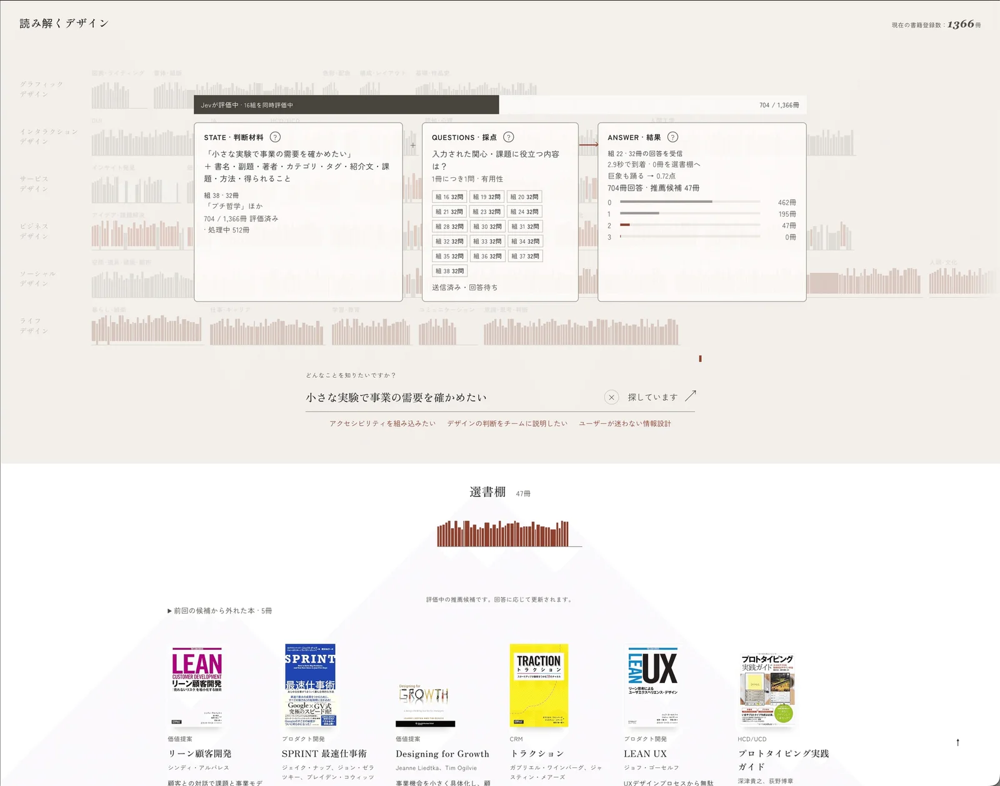
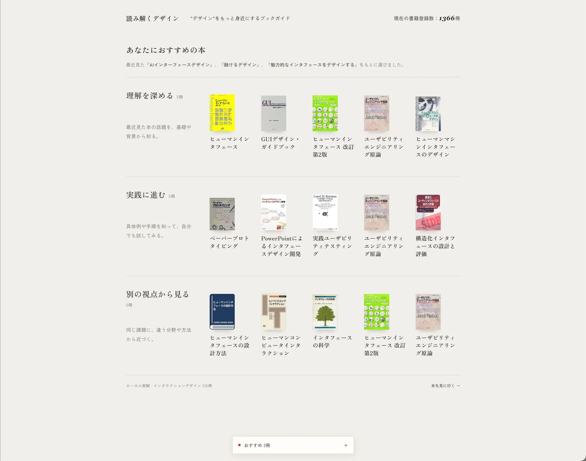

体験
採点の結果を、一覧の並び替えではなく、本が棚から出てくる動きとして見せている。サイトがもともと持つ分野別の本棚の表現を、そのまま検索結果の表現に使っている。
- 評価の途中経過を隠していない。1枚目では、32冊ずつの組に分けて送り、「22組・32問の回答を受信」「704冊回答・推薦候補 47冊」と、どこまで進んだかが数で出る。点数0〜3ごとの冊数も棒で示される。
- 「評価中の推薦候補です。回答に応じて更新されます。」という注記があり、選書棚の中身がまだ確定していないことを伝えている。「前回の候補から外れた本」も折りたたんで残し、結果が入れ替わったことを追えるようにしている。
- STATE・QUESTIONS・ANSWERのパネルは、Jevに何を渡し、何を尋ね、何が返ったかを、利用者向けの画面の上にそのまま重ねている。試作の検証用の表示と思われ、公開時にどこまで見せるかは記事では触れていない。
- For Youは、推薦の根拠を「最近見た『…』をもとに選びました」と一文で示す。棚の名前が、採点の観点をそのまま利用者の言葉に直したものになっている。同じ本が複数の棚に重なって出ている点は、画面から読み取れる。
- 対象はインタラクションデザインの235冊に絞った実験で、関心の手がかりは「詳細ページを開いたこと」だけだと作者は書いている。
キャプチャ
{kind=link}

（原寸の画像を開く）{kind=link}

（原寸の画像を開く）見る箇所1枚目は上部の進行の帯「Jevが評価中・16組を同時評価中 704 / 1,366冊」、STATE・QUESTIONS・ANSWERの3つのパネル、点数ごとの冊数の分布、背景の分野別の本棚、入力欄と例文、下の「選書棚 47冊」と「前回の候補から外れた本・5冊」。2枚目は「あなたにおすすめの本」の根拠の一文と、3つの棚（理解を深める、実践に進む、別の視点から見る）
入力から画面の変化まで
-
判断への入力
検索では、やりたいことや悩みの文（画面の例は「小さな実験で事業の需要を確かめたい」）と、登録された1,366冊の書名・紹介文など。For Youでは、直前に詳細ページを開いた本とその順番、候補の本の情報。
-
Jevの判断
検索では「その相談に役立つ説明・方法・事例があるか」を1冊ごとに0〜3点で採点する。For Youでは「基礎や背景を補えるか」「試す手順や事例があるか」「別の方法で考えられるか」の3つを、それぞれ0〜3点で採点する。
-
結果がUIをどう変えるか
検索では、点の高い本が本棚から手前の「選書棚」へ移ってくる。記事の図では2点以上を表示する。For Youでは、観点ごとの棚に点数順で最大5冊が並び、もとにした閲覧履歴が一文で示される。
- 判断型の見立て
- Score出典に明記
- 記事の図が「0〜3点で評価」と返り値の「score」を示し、画面のパネルも「QUESTIONS・採点」としている。For Youは3つの問いをそれぞれ0〜3点で採点する。
Jevとの適合
1冊ごとに同じ基準で点を付ける作業は、Scoreの型と並列の評価に合う。一方で作者は、同じ体験は一般的なLLMや既存の技術でも作れそうで、精度・速度・費用の比較はできていないと明記している。渡す情報の粒度や一度に評価する冊数が適切かも分からない、としている。Jevでなければならない理由は、この事例からは示されていない。
確認範囲と未確認事項
日本語の作者（デザイナー）によるnote記事と、記事内の画面画像を確認。作者が運営する書籍紹介サイトを実験台にした、ローカル環境だけの試作で、公開されていない。作者は投稿で「このまま公開するのは難しい」と述べ、記事でも、Jevである必然性と使い方の適切さはまだ分からないと書いている。作者の投稿動画は、この作業では確認していない。
- 確認済み記事本文、記事内の画面画像2枚（意図検索の評価中の画面、For Youの画面）、仕組みを説明する図2枚（掲載はしていない）
- 未検証本が移動する演出の動き（作者の投稿動画は未確認）、採点の妥当性、評価にかかる時間の実測、試作のコード。公開サイトにはこの機能は入っていない
- 推定扱いなし（0〜3点の採点であることは記事の図と画面に明記）。1枚目の「2.9秒で到着」が何の時間を指すかは画面からは確定できない
- 引用記事内の画像を引用。映っているのは書籍の表紙と書誌情報で、個人の情報は含まない。権利は作者と各書籍の権利者に帰属する